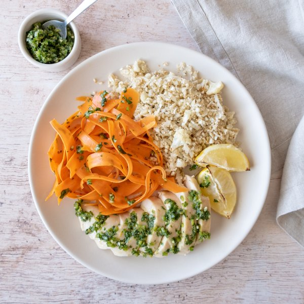

Oven Roasted Chicken with Carrots, Cauliflower Rice & Green Harissa

Total Time
35 min
Nutrition (per serving)
579.7 kcalCalories
42.5 gProtein
14.9 gCarbs
39.9 gFat
Full nutrition table
| Calories | 579.7 kcal |
| Total fat | 39.9 g |
| Saturated fat | 5.9 g |
| Trans fat | 0.1 g |
| Cholesterol | 124.2 mg |
| Sodium | 156 mg |
| Carbohydrates | 14.9 g |
| Fiber | 5.4 g |
| Sugars | 5.5 g |
| Protein | 42.5 g |
| Potassium | 1258.1 mg |
| Calcium | 79.1 mg |
| Iron | 3.2 mg |
| Vitamin A | 50.3 IU |
| Vitamin C | 96.5 mg |
| Vitamin D | 1.7 IU |
Cookware
Ingredients
- 2 mediumcarrots
- 1 medium headcauliflower
- 1 ½ lbchicken breasts, boneless skinless
- 1 small bunchcilantro
- 2 clovesgarlic
- 2jalapeño peppers
- 2lemons
- coriander, ground
- cumin, ground
- extra virgin olive oil
- salt
Steps
- Preheat oven to 450°F and position racks in the upper and lower thirds of the oven.
- Wash and dry the fresh produce.1 medium head cauliflower
2 lemons
2 jalapeño peppers
1 small bunch cilantro
2 medium carrots - Cut the cauliflower head into quarters, then trim off and discard the leaves and thick stems. Using a box grater or food processor, coarsely grate the cauliflower and transfer to a baking dish.
- In a medium bowl whisk together oil and spices to make a smooth paste. Add half of the spice paste to the baking dish with the cauliflower and stir to combine.¼ cup extra virgin olive oil
2 tsp cumin
2 tsp coriander
1 tsp salt - Pat dry the chicken breasts with paper towels and place in the bowl with the remaining spice paste; turn to coat.1 ½ lb chicken breasts, boneless skinless
- Line a baking sheet with parchment paper and place the chicken on top.
- Grate all of the zest from the lemons; add to a small bowl and set aside. Cut the lemons into wedges and add to the pan with the chicken.
- Place the chicken on the upper rack of the oven and the cauliflower rice on the rack below. Bake until the cauliflower rice has softened and the chicken is golden brown and cooked through, about 20 minutes.
- While the chicken and cauliflower cook, quarter the jalapeño peppers lengthwise; seed and remove ribs of the jalapeños with a spoon. Finely mince and add to the bowl with the lemon zest. (Be careful, with jalapeños, do not touch your eyes and ensure you wash your hands after handling or wear gloves while preparing).
- Shave the cilantro leaves off the stems; discard the stems and finely mince the leaves. Peel and mince garlic.2 cloves garlic
- To make the harissa, add cilantro, garlic, olive oil, and spices to the bowl with the jalapeno and zest; stir to combine.⅓ cup extra virgin olive oil
1 tsp coriander
1 tsp cumin
¼ tsp salt - Peel the carrots; then using the peeler, run it along the carrot to make long, noodle-like strips; add carrot strips to a large bowl with 2 tbsp of the harissa; toss to coat.
- When the chicken is done, slice into strips.
- To serve, divide chicken, crisp carrots, and cauliflower rice between plates. Drizzle remaining harissa over the chicken and serve with warm lemon wedges. Enjoy!